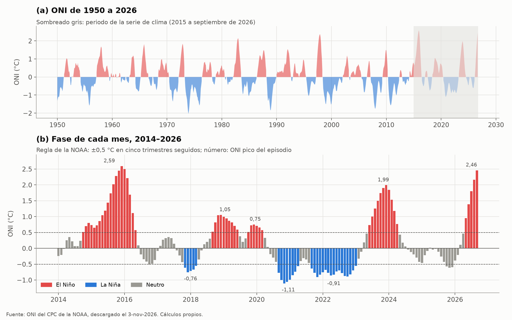
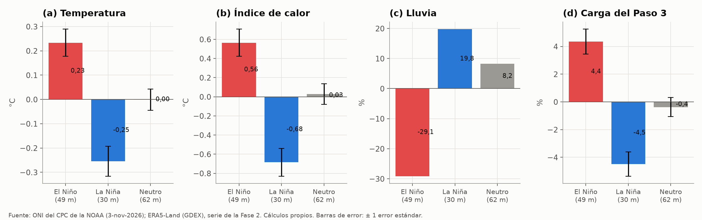
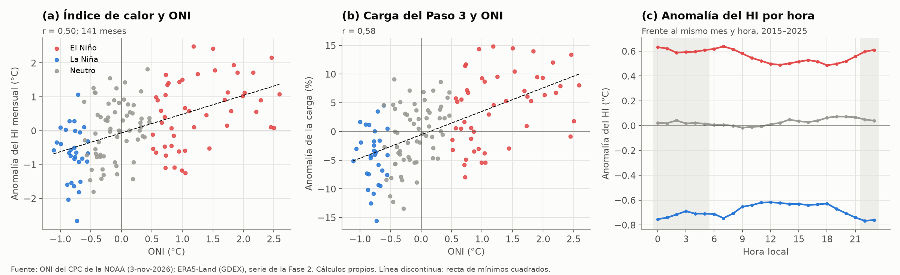
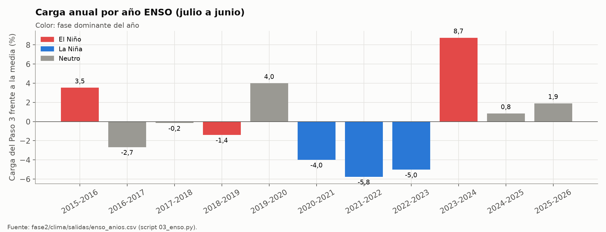

El Niño y La Niña (ONI de la NOAA)#
La propuesta pide un escenario de «año de El Niño» en la Fase 3 y un criterio de validación (N6) con los errores de 2023, cuyo segundo semestre fue El Niño fuerte. Para eso hace falta saber qué meses de la serie fueron El Niño, La Niña o neutros, y cuánto cambian en esas fases el clima de Barranquilla y la carga de enfriamiento. Este capítulo describe el índice que se usa, el ONI de la NOAA, la regla con que se clasifican los meses y el efecto de cada fase sobre la serie horaria del capítulo Clima horario. Las cifras salen de scripts/eda/enso.py, que rehace la clasificación de la Fase 2 (fase2/clima/scripts/03_enso.py) y escribe las figuras figuras/eda/enso_*.png y las tablas tablas/eda/enso_*.csv.
Qué es#
El Índice Oceánico de El Niño (ONI) es la anomalía de la temperatura superficial del mar en la región Niño 3.4 del Pacífico ecuatorial (5° N–5° S, 170°–120° O), promediada en trimestres móviles (NOAA Climate Prediction Center, 2026). El Centro de Predicción del Clima de la NOAA lo publica con datos desde 1950 y lo usa para declarar los episodios: hay condiciones de El Niño cuando el ONI es de +0,5 °C o más y de La Niña cuando es de −0,5 °C o menos, y un episodio exige que se mantengan al menos cinco trimestres seguidos. La anomalía se calcula frente a periodos base de 30 años que la NOAA actualiza, de modo que los valores pasados pueden cambiar un poco entre descargas, y los últimos meses son provisionales. Por eso se fija la fecha de descarga.
El ONI no mide nada de Barranquilla, sino el estado del Pacífico, y su efecto en la costa Caribe de Colombia (más calor y menos lluvia con El Niño, lo contrario con La Niña) se comprueba aquí con la serie local, no se supone.
Cobertura y estructura#
El archivo fase2/clima/datos/noaa/oni.ascii.txt, descargado el 3 de noviembre de 2026, tiene 921 filas, una por trimestre móvil, desde diciembre–febrero de 1950 hasta agosto–octubre de 2026, con cuatro columnas: el trimestre (SEAS, de DJF a NDJ), el año (YR), la temperatura media del mar en la región (TOTAL) y su anomalía (ANOM), que es el ONI. No tiene faltantes. Cada trimestre se asigna a su mes central (DJF a enero), así que el último mes con ONI es septiembre de 2026, el mismo en que termina la serie de clima. La tabla de trabajo tiene 141 meses, de enero de 2015 a septiembre de 2026, todos con al menos 28 días de horas de clima.
Variables que usa la tesis#
Variable |
Unidad |
Definición |
Uso |
|---|---|---|---|
|
°C |
ONI del trimestre centrado en el mes |
Clasificación, regresión descriptiva |
|
El Niño, La Niña o neutro con la regla de cinco trimestres |
Anomalías por fase, escenarios de la Fase 3 |
|
|
Fase y mes de inicio del episodio (p. ej., |
Comparación entre episodios |
|
|
Débil (0,5–0,9), moderado (1,0–1,4), fuerte (1,5–1,9) o muy fuerte (2,0 o más), por el ONI pico del episodio en valor absoluto |
Respuesta por intensidad |
|
|
°C |
Temperatura e índice de calor medios del mes menos la media de su mes calendario en 2015–2025 |
Efecto de la fase en el clima |
|
% |
Lluvia del mes frente a la de su mes calendario |
Efecto en la lluvia |
|
K·h |
Grados-hora de enfriamiento con el índice de calor y base de 26,5 °C |
Efecto en la demanda de frío |
|
kWh, % |
Carga de enfriamiento del Paso 3 de la vivienda media del catastro y su anomalía |
Efecto en la carga, escenario de El Niño |
|
Año de julio a junio, con su fase dominante |
Año más exigente para la Fase 3 |
Análisis exploratorio#
Fases y episodios#
De los 141 meses, 49 son de El Niño (35 %), 30 de La Niña (21 %) y 62 neutros. Los episodios no se reparten de forma pareja en la década (Figura 63): la serie empieza con El Niño muy fuerte de 2015–2016, tiene tres episodios de La Niña seguidos entre 2017 y 2023 y termina con El Niño fuerte de 2023–2024 y uno nuevo que empezó en mayo de 2026. En 2022 los doce meses son de La Niña y en 2015 los doce de El Niño (tablas/eda/enso_meses_por_fase.csv). En el contexto de 1950 a 2026 (panel a), el pico de 2015–2016 (2,59 en noviembre–enero) es el más alto del registro, y el de 2026 (2,46 en agosto–octubre, todavía en aumento) ya supera al de 1997–1998 (2,37).


Figura 63 ONI de 1950 a 2026 (a) y fase de cada mes de 2014 a 2026 con el ONI pico de cada episodio (b).#
Episodio |
Inicio |
Fin |
Meses (en la serie) |
ONI pico |
Intensidad |
Anomalía del HI (°C) |
Anomalía de la carga del Paso 3 (%) |
|---|---|---|---|---|---|---|---|
El Niño |
oct. 2014 |
may. 2016 |
20 (17) |
2,59 |
Muy fuerte |
+0,24 |
+1,9 |
La Niña |
nov. 2017 |
mar. 2018 |
5 (5) |
−0,76 |
Débil |
−0,13 |
−0,2 |
El Niño |
sep. 2018 |
jun. 2019 |
10 (10) |
1,05 |
Moderado |
−0,39 |
−1,3 |
El Niño |
oct. 2019 |
mar. 2020 |
6 (6) |
0,75 |
Débil |
+0,39 |
+4,2 |
La Niña |
sep. 2020 |
abr. 2021 |
8 (8) |
−1,11 |
Moderado |
−0,41 |
−2,7 |
La Niña |
sep. 2021 |
ene. 2023 |
17 (17) |
−0,91 |
Débil |
−0,98 |
−6,3 |
El Niño |
jun. 2023 |
abr. 2024 |
11 (11) |
1,99 |
Fuerte |
+1,70 |
+10,6 |
El Niño |
may. 2026 |
sep. 2026 (en curso) |
5 (5) |
2,46 |
Muy fuerte (provisional) |
+1,27 |
+10,1 |
El efecto de un episodio en Barranquilla no crece con su intensidad (Tabla 52). El Niño de 2015–2016, el más intenso de la serie, subió el índice de calor solo 0,24 °C en promedio, porque sus primeros meses de 2015 fueron más frescos que la media, mientras El Niño fuerte de 2023–2024 lo subió 1,70 °C y la carga 10,6 %. El Niño moderado de 2018–2019 incluso bajó la carga. En La Niña pasa algo parecido: el episodio débil y largo de 2021–2023 enfrió más que el moderado de 2020–2021. Con ocho episodios no se puede separar la intensidad de otras diferencias entre ellos, como la estación en que caen o la tendencia de la década.
Anomalías por fase#
Fase |
Meses |
Episodios |
Temperatura (°C) |
Índice de calor (°C) |
Humedad relativa (puntos) |
Lluvia (%) |
Grados-hora, base 26,5 °C (%) |
Carga del Paso 3 (%) |
|---|---|---|---|---|---|---|---|---|
El Niño |
49 |
5 |
+0,23 ± 0,06 |
+0,56 ± 0,14 |
−0,31 ± 0,18 |
−29 |
+13 |
+4,4 ± 0,9 |
La Niña |
30 |
3 |
−0,25 ± 0,06 |
−0,68 ± 0,14 |
−0,12 ± 0,19 |
+20 |
−17 |
−4,5 ± 0,9 |
Neutro |
62 |
0 |
0,00 ± 0,04 |
+0,03 ± 0,11 |
+0,23 ± 0,14 |
+8 |
+1 |
−0,4 ± 0,7 |
El Niño calienta y seca Barranquilla y La Niña la enfría y la moja, con efectos de tamaño parecido y signo contrario (Tabla 53 y Figura 64). La anomalía de la temperatura es de un cuarto de grado, pero la del índice de calor es más del doble y la de los grados-hora, que se acumulan solo por encima de la base, llega a +13 % y −17 %. La carga del Paso 3 sube 4,4 % en El Niño y baja 4,5 % en La Niña. Responde menos que los grados-hora porque la mitad de la carga es la de la cubierta, que depende de la radiación más que del aire, y la irradiancia solo sube 5 W/m² en El Niño. La humedad relativa casi no cambia entre fases, así que el efecto sobre el índice de calor viene de la temperatura. Los errores estándar suponen meses independientes y son optimistas, porque los meses de un mismo episodio se parecen.


Figura 64 Anomalía media de la temperatura, el índice de calor, la lluvia y la carga del Paso 3 en los meses de cada fase, 2015 a septiembre de 2026.#
Relación con el ONI y hora del día#
La anomalía mensual del índice de calor correlaciona 0,50 con el ONI y la de la carga 0,58, con mucha dispersión entre meses de un mismo valor del índice (Figura 65). Con una regresión de la anomalía sobre el ONI y una tendencia lineal, cada grado de ONI sube el índice de calor 0,62 °C y la carga 4,4 %, y la tendencia aparte es de +0,97 °C y +4,7 % por década (tablas/eda/enso_regresion.csv). La década empezó con La Niña y terminó con El Niño, así que las dos cosas se confunden y sin la tendencia el ONI absorbería parte del calentamiento. La regresión es descriptiva y no separa bien los dos efectos con 141 meses.
El efecto de la fase es algo mayor de noche que al mediodía, como muestra el panel c de la Figura 65. En El Niño el índice de calor sube 0,6 °C entre las 22 y las 7 h y 0,5 °C entre las 12 y las 18 h, y en La Niña baja entre 0,69 y 0,77 °C de noche y 0,62 °C al mediodía. Como ERA5-Land reproduce mejor la noche que el mediodía (Clima horario), la parte nocturna del efecto es también la mejor medida, y es la que pesa en la carga de los dormitorios.


Figura 65 Anomalía mensual del índice de calor (a) y de la carga del Paso 3 (b) frente al ONI, y anomalía horaria del índice de calor por fase (c).#
Años ENSO#
Medido de julio a junio, el año en que se desarrollan y terminan los episodios, la carga del Paso 3 va de −5,8 % en 2021–2022 (La Niña) a +8,7 % en 2023–2024 (El Niño) frente a la media de los once años (Figura 66). Los tres años de La Niña seguidos (2020–2023) son los tres de menor carga. 2023–2024 es el caso más exigente observado para el escenario de El Niño de la Fase 3 y 2021–2022 el de La Niña. El año 2025–2026 queda como neutro por su fase dominante, aunque termina con El Niño en curso.


Figura 66 Carga anual del Paso 3 de cada año ENSO (julio a junio) frente a la media de 2015–2026, coloreada por la fase dominante.#
Procesamiento paso a paso#
Descarga. Entrada:
https://www.cpc.ncep.noaa.gov/data/indices/oni.ascii.txt. Operación: descarga manual del archivo de texto el 3 de noviembre de 2026. Salida:fase2/clima/datos/noaa/oni.ascii.txt. Decisión: guardar la copia con su fecha, porque la NOAA revisa los valores recientes y el periodo base.Mes central. Script:
fase2/clima/scripts/03_enso.py(funciónleer_oni). Operación: se lee el archivo separado por espacios y cada trimestre móvil se asigna a su mes central (DJF a enero, JFM a febrero y así hasta NDJ a diciembre). Salida: una serie mensual de 921 valores del ONI. Decisión: el mes central es la convención de la NOAA para ubicar el trimestre en el tiempo.Fase de cada mes. Función
fases. Operación: se marcan los meses con ONI de +0,5 °C o más (o de −0,5 °C o menos), se agrupan en rachas seguidas y solo las rachas de al menos cinco meses se declaran episodio. Los demás meses son neutros. La clasificación se hace sobre toda la serie desde 1950, para que un episodio que empezó antes de 2015 (el de octubre de 2014) se reconozca completo. Salida: fase, episodio e intensidad de cada mes. Decisión: es la regla de la NOAA, de modo que la clasificación coincide con la oficial.scripts/eda/enso.pyla rehace y obtiene los mismos 141 meses sin ninguna diferencia.Intensidad. Operación: cada episodio toma la categoría de su ONI pico en valor absoluto, con cortes en 1,0, 1,5 y 2,0 °C. Decisión: son los cortes de uso común para débil, moderado, fuerte y muy fuerte. La intensidad del episodio de 2026 es provisional, porque sigue en curso.
Clima mensual. Entrada:
fase2/clima/salidas/clima_horario_barranquilla.parquet. Operación: se descartan las horas de 2014 (las que terminan hasta las 00:00 del 1 de enero de 2015), se agrupan las horas por mes y se calculan la temperatura, el índice de calor y la irradiancia medios, la lluvia total y los grados-hora \(\sum \max(HI - T_b, 0)\) con bases de 26,5 °C (la consigna del Paso 3) y 30 °C. Se conservan los meses con al menos 28 días de horas. Salida: 141 meses.Carga del Paso 3. Operación: para cada mes se calculan los coeficientes de carga de la Fase 1 (
arquetipos/src/carga.py) con la temperatura, el punto de rocío y la irradiancia horarios, y se multiplican por las áreas y el volumen de la vivienda media del catastro, que se deducen de las tablasclima_gdex_*del script 11 de arquetipos. Salida: carga por componente y total del mes. Decisión: usar la vivienda media aísla el efecto del clima, sin mezclarlo con la composición del parque (Arquetipos).Anomalías. Operación: cada variable se compara con la media de su mes calendario en 2015–2025, porque las fases no se reparten igual en el año y la carga tiene un ciclo anual marcado. Las anomalías relativas de un grupo de meses (lluvia, grados-hora, carga) son la suma de las anomalías sobre la suma de las climatologías, no la media de los porcentajes, que exageraría los meses secos con poca lluvia de base. Salida:
fase2/clima/salidas/enso_meses.csvyenso_anomalias.csv(por fase e intensidad, con error estándar).Regresión descriptiva. Operación: mínimos cuadrados de la anomalía mensual sobre el ONI y una tendencia lineal en décadas. Salida:
enso_regresion.json. Decisión: incluir la tendencia, porque sin ella el ONI absorbe parte del calentamiento de la década.Años ENSO. Operación: se suman los meses de julio a junio y se toma la fase más frecuente como dominante. Se conservan los años con 12 meses. Salida:
enso_anios.csv, con la carga de cada año frente a la media.Perfil horario y comprobación. Script:
scripts/eda/enso.py. Operación: rehace los pasos 2 a 5 y 7, compara la fase y las anomalías conenso_meses.csv(diferencia máxima de 0,00005 °C, por el redondeo del archivo) y calcula la anomalía de cada hora frente a la media del mismo mes calendario y la misma hora. Salida:tablas/eda/enso_*.csv.
Qué entrega al modelo#
La base entrega la fase, el episodio y la intensidad de cada mes de 2015 a septiembre de 2026, el efecto medio de cada fase sobre el clima y la carga, y la elección de los años extremos (2023–2024 para El Niño y 2021–2022 para La Niña) para los escenarios de la Fase 3 (pasos 6 a 8). La fila de El Niño y La Niña de Insumos del modelo resume el valor, la incertidumbre y el paso en que se usa. El ONI llegó a 2,46 en agosto–octubre de 2026, así que la prueba con datos de 2027 caerá probablemente en un episodio de El Niño fuerte o muy fuerte, y los errores de 2023 que usa el criterio N6 son los de un periodo comparable.
Problemas encontrados y cómo se trataron#
Pocos episodios. Ocho episodios en 141 meses no bastan para estimar cómo crece el efecto con la intensidad, y los episodios del mismo signo difieren mucho entre sí (Tabla 52). Se reporta el efecto medio por fase con su error estándar y se declara que no crece con la intensidad. Para el escenario se usa el año observado más exigente, no una extrapolación con el ONI.
Fase confundida con la tendencia. La Niña se concentra en 2020–2023 y El Niño fuerte al final de la serie. La regresión incluye una tendencia lineal, pero con una década de datos las dos cosas no se separan bien. Las anomalías se miden frente a la climatología de 2015–2025, así que los meses de 2026 incluyen también la tendencia.
Meses no independientes. Los meses de un episodio están correlacionados, de modo que los errores estándar de la Tabla 53 son optimistas. No se corrigen, porque la tabla es descriptiva y no se usa para una prueba.
Episodio en curso y valores provisionales. El episodio de 2026 no ha terminado y la NOAA revisa los últimos valores del ONI, así que su pico y su intensidad pueden cambiar. Se fijó la descarga del 3 de noviembre de 2026 y habrá que repetir la clasificación con una descarga nueva antes de la prueba con datos de 2027.
Lluvia con horas vacías. La lluvia de ERA5-Land de GDEX tiene 93 horas vacías en mayo de 2019 (El Niño) y 436 entre febrero y junio de 2022 (La Niña) (Clima horario). La anomalía de lluvia de La Niña está subestimada y la sequía de El Niño algo exagerada. La carga no se ve afectada porque no usa la lluvia.
Carga de la vivienda media. La anomalía de la carga es la de la vivienda media del catastro con la envolvente común del Paso 3, no la de cada arquetipo. Sirve para comparar fases, no para dar el nivel de la carga de un año.